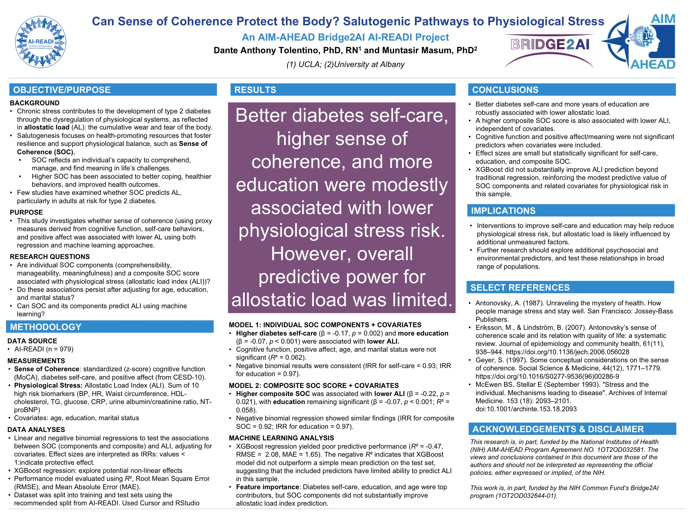

Poster · AIM-AHEAD Annual Meeting · 2025
A strong “sense of coherence,” the feeling that life is understandable, manageable, and meaningful, may help buffer the body against the physical toll of chronic stress.
Chronic stress wears on the body and raises the risk of type 2 diabetes, a toll captured by a measure called allostatic load. This study asks whether a person’s “sense of coherence,” the feeling that life is understandable, manageable, and meaningful, can help protect the body from that wear and tear. It is part of the lab’s NIH AIM-AHEAD and Bridge2AI work using the AI-READI dataset.
A secondary analysis using the national AI-READI dataset, part of the lab’s NIH AIM-AHEAD and Bridge2AI Common Fund work.
It draws on salutogenesis, the study of health-promoting resources that foster resilience, to examine whether sense of coherence is associated with lower allostatic load. As a cross-sectional analysis, it describes associations rather than cause and effect.
Allostatic load captures the cumulative wear of chronic stress.
Sense of coherence may foster resilience against that wear.
Part of building AI and data capacity for health equity through AIM-AHEAD.
